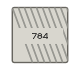

784: Level-crossing countdown — 2 stripes
Unverified source Placeholder: no verified source diagram. UNVERIFIED-SOURCES #17: SI 2002 names both in reg 2 text (printed p8); the OCR index shows only '784.1' (p116) and '785.1' (p117). Same check as 16. Stays a labelled placeholder
Level-crossing countdown — 2 stripes
PLACEHOLDER: the image is the neutral placeholder, not the sign.

| Id | 784 |
|---|---|
| Name | Level-crossing countdown — 2 stripes |
| Category | Signs |
| Group | WarnTriangle |
| Diagram | 784 |
| Row status | 2002-legacy |
| Family | WarnTriangle |
| Chapter | 7 |
| Mount | Post |
| Dimensions (m) | plate_height 0.6, plate_width 0.679, post_diameter 0.076, underside 1.5, verge_offset 0.8 |
| OSM tag | traffic_sign=GB:784 |
| Face source | placeholder |
| Diagram ref / source page | SI 2002/3113 (2002-legacy row; page not recorded in the atlas) |
| Licence | OGL-3.0 |